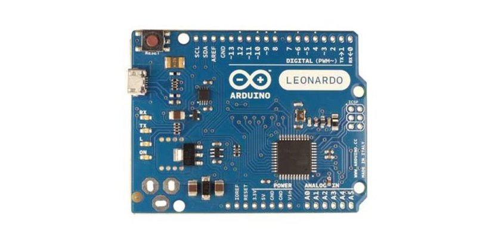

Tipos
De entre las placas oficiales puedes encontrar multitud de modelos. Todos especialmente pensados para un fin, compatibles con tarjetas de expansion (shields) y módulos oficiales, así como con el IDE de Arduino. A continuación se muestran los modelos mas populares:
Arduino UNO
Es la plataforma más extendida y la primera que salió al mercado, por ello nos podemos basar en esta para hacer la comparativa con el resto de placas. Todas las características de esta placa estarán implementadas en casi todas las placas restantes. Se basa en un microcontrolador Atmel ATmega328P de 8 bits a 16Mhz que funciona a 5v. 32KB son correspondientes a la memoria flash (0,5KB reservados para el bootloader), 2KB de SRAM y 1KB de EEPROM. En cuanto a memoria es una de las placas más limitadas, pero no por ello resulta insuficiente para cualquier proyecto con el que nos podamos encontrar. Las salidas pueden trabajar a voltajes superiores, de entre 6 y 20v pero se recomienda una tensión de trabajo de entre 7 y 12v. Contiene 14 pines digitales, 6 de ellos se pueden emplear como PWM. En cuanto a pines analógicos cuenta con 6. Estos pines pueden trabajar con intensidades de corriente de hasta 40mA.
Arduino/Genuino 101
Se trata de una placa que se conoce como Arduino 101 en América y Genuino 101 fuera de Estados Unidos. Sigue la misma filosofía de las placas oficiales de Arduino, pero llama la atención su módulo Intel Curie, un módulo de dimensiones reducidas y bajo consumo potenciados por el SoC Intel Quark de 32 bits. Se trata de un SoC que contiene un microcontrolador x86 (una oportunidad única de programar en una plataforma x86, alejandose de los ATMega y los ARM), 80KB de SRAM, 384 KB de memoria flash, DSP, Bluetooth, sensores acelerometros y giroscopio, etc. Por el resto de características, como conexiones y tamaño, es igual a Arduino UNO y compatibles con sus shields.

Arduino Zero
En aspecto es similar a Arduino UNO, pero esta placa esconde sorpresas con respecto a la plataforma UNO. En vez del microcontrolador Atmel ATmega basado en arquitectura AVR de 8 bits, el Zero contiene un potente Atmel SAMD21 MCU de 48Mhz con un core ARM Cortex M0 de 32 bits. Con 256 KB de memoria flash, 32 KB de SRAM y una EEPROM de más de 16KB por emulación. El voltaje en el que opera es de 3v3/5v (7mA) y contiene 14 pines E/S digitales, de los cuales 12 son PWM y UART. En el terreno analógico se dispone de 6 entradas para un canal ADC de 12 bits y una salida analógica para DAC de 10 bits. En definitiva, esta placa va destinada para los que Arduino UNO se les quede corto y necesitan algo más de potencia de procesamiento.
Arduino Yun
Se basa en el microcontrolador ATmega32u4 y en un chip Atheros AR9331 (que controla el host USB, el puerto para micro-SD y la red Ethernet/WiFi), ambos comunicados mediante un puente. El procesador Atheros soporta la distribución Linux basadas en OpenWrt llamada OpenWrt-Yun. Se trata de una placa similar a Arduino UNO pero con capacidades nativas para conexión Ethernet, WiFi, USB y micro-SD sin necesidad de agregar o comprar shields aparte. Contiene 20 pines digitales, 7 pueden ser usados en modo PWM y 12 como analógicos. El microcontrolador ATmega32u4 de 16Mhz trabaja a 5v y contiene una memoria de solo 32KB (4KB reservados al bootloader), SRAM de solo 2,5KB y 1KB de EEPROM. Como vemos, en este sentido queda corto. Sin embargo se complementa con el AR9331 a 400Mhz basado en MIPS y trabajando a 3v3. Este chip además contiene RAM DDR2 de 64MB y 16MB flash para un sistema Linux embebido.
Arduino Leonardo
Es una placa basada en un microcontrolador ATmega32u4 de bajo consumo y que trabaja a 16Mhz. La memoria flash tiene una capacidad de 32KB (4KB para el bootloader) y 2.5KB de SRAM. La EEPROM es de 1KB, también muy similar a Arduino UNO en cuanto a capacidades de almacenamiento. A nivel electrónico y de voltajes es igual al UNO. Pero este microcontrolador puede manejar 20 pines digitales (7 de ellos pueden ser manejados como PWM) y 12 pines analógicos. Como vemos, contiene los mismos pines que Yun, solo que prescinde de las funcionalidades de red. El volumen ocupado por Leonardo es inferior al de UNO, puesto que carece de las inserciones de los pines y en su lugar posee perforaciones con pads de conexión en la propia placa. Además las dimensiones del conector USB de la placa es mucho menor, ya que en vez de una conexión USB emplea una mini-USB para ahorrar espacio.
Arduino Due
Es una placa con un microcontrolador Atmel SAM3X8E ARM Cortex-M3 de 32 bits. Este chips que trabaja a 84Mhz (3,3v) aporta una potencia de cálculo bastante superior a los anteriores microcontroladores vistos. Por eso es idóneo para todos aquellos que necesiten de un proyecto con alta capacidad de procesamiento. Al tener un core a 32 bits permite realizar operaciones con datos de 4 bytes en un solo ciclo de reloj. Además, la memoria SRAM es de 96KB, superior al resto de placas vistas anteriormente e incorpora un controlador DMA para acceso directo a memoria que intensifica el acceso a memoria que puede hacer la CPU. Para el almacenamiento se dispone de 512KB de flash, una cantidad muy grande de memoria para cualquier código de programación. En cuanto a soporte de voltajes en intensidades es idéntica a UNO, solo que el amperaje de los pines se extiende hasta los 130-800mA (para 3v3 y 5v respectivamente). El sistema dispone de 54 pines de E/S digitales, 12 de ellos pueden ser usados como PWM. También tiene 12 analógicos, 4 UARTs (serie, frente a los dos de UNO), capacidades de conexión USB OTG, dos conexiones DAC (conversión digital a analógico), 2 TWI, un power jack, SPI y JTAG.
Arduino Mega
Su nombre proviene del microcontrolador que lo maneja, un ATmega2560. Este chip trabaja a 16Mhz y con un voltaje de 5v. Sus capacidades son superiores al ATmega328 del Arduino UNO, aunque no tan superiores como las soluciones basadas en ARM. Este microcontrolador de 8 bits trabaja conjuntamente con una SRAM de 8KB, 4KB de EEPROM y 256KB de flash (8KB para el bootloader). Como se puede apreciar, las facultades de esta placa se asemejan al Due, pero basadas en arquitectura AVR en vez de ARM. En cuanto a características electrónicas es bastante similar a los anteriores, sobre todo al UNO. El número de pines es parecido al Arduino Due: 54 pines digitales (15 de ellos PWM) y 16 pines analógicos. Esta placa es idónea para quien necesita más pines y potencia de la que aporta UNO, pero el rendimiento necesario no hace necesario acudir a los ARM-based.

Arduino Ethernet
Si deseas un Arduino UNO pero con capacidades Ethernet tienes dos opciones, comprar un Arduino UNO y un shield Ethernet para integrarlo, o la otra opción sería adquirir un Arduino Ethernet. Esta placa es bastante similar a la UNO, incluso en el aspecto, pero tiene capacidades de red. Su microcontrolador es un ATmega328 que trabaja a 16Mhz (5v). Va acompañado de 2KB de SRAM, 1KB de EEPROM y 32KB de flash. El resto de características electrónicas son como las de UNO solo que añade capacidad para conexión Ethernet gracias a un controlador W5100 TCP/IP embebido y posibilidad de conectar tarjetas de memoria microSD. Los pines disponibles son 14 digitales (4 PWM) y 6 analógicos. Lo que hay que tener en cuenta es que Arduino reserva los pines 10-13 para ser usado para SPI, el 4 para la tarjeta SD y el 2 para el interruptor W5100.
Arduino casero
Otra posible opción puede ser comprar los componentes por separado y montarlo uno mismo.